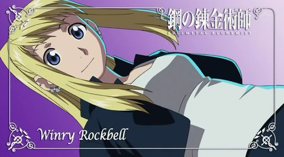

主要角色
愛德華．艾德利克
故事中的第一男主角，鋼之煉金術師稱號的持有者。在人體鍊成的過程中，失去了右臂和左腿。個性剛毅，對自己所相信的真理和價值，從不做出任何退讓，身為國家鍊金術師，一個必定雙手染血的職業，卻總是想盡辦法找出能夠不殺人的辦法。在幫助弟弟找回身體的過程中，更是從來沒有放棄的念頭。此外，因為年紀輕輕就在鍊金術上有著不凡的造詣，在他的自信當中其實可以嗅到一絲絲驕傲的味道，但在面對困難時，卻並不會桀傲不遜。
阿爾馮斯．艾德利克
故事中的第二男主角，愛德華．愛德利克的弟弟。在人體鍊成中，失去了整個身體，後來在哥哥以右臂為條件的情形下，勉強用盔甲維持住了生命。對自己所相信的價值和真理和自己的兄長同樣堅持，不願退讓。但和愛德華．艾德利克不同的是，阿爾馮斯個性上透露出的堅持不會讓人喘不過氣，反倒是有些溫柔的成分在其中。故事中，他善良和溫柔的特質有著舉足輕重的影響。

溫莉．洛克貝爾
故事中的女主角，愛德華和阿爾馮斯的青梅竹馬。父母在伊修瓦爾之一當中被一名伊修瓦爾武僧所殺害，整個童年由奶奶帶大，後來成為一名機械師(鋼鍊中有機械義肢的存在)，是愛德華專門的機械鎧維修師。在故事中，相對於愛德利克兄弟而言，他是一個看上去有些沒用的角色。然而即使如此，她也用著自己無比的勇敢，做出了一個個不容忽視的貢獻。